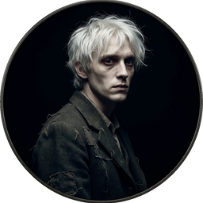
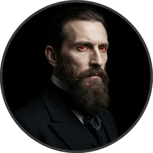
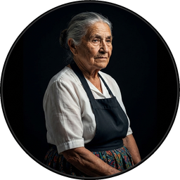
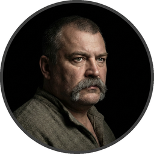
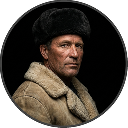

Cast of Characters
Click to hear their voice





CHAPTER I JONATHAN HARKER’S JOURNAL
(Kept in shorthand.)
3 May. Bistritz.—Left Munich at 8:35 P. M., on 1st May, arriving at Vienna early next morning; should have arrived at 6:46, but train was an hour late. Buda-Pesth seems a wonderful place, from the glimpse which I got of it from the train and the little I could walk through the streets. I feared to go very far from the station, as we had arrived late and would start as near the correct time as possible. The impression I had was that we were leaving the West and entering the East; the most western of splendid bridges over the Danube, which is here of noble width and depth, took us among the traditions of Turkish rule.
We left in pretty good time, and came after nightfall to Klausenburgh. Here I stopped for the night at the Hotel Royale. I had for dinner, or rather supper, a chicken done up some way with red pepper, which was very good but thirsty. (Mem., get recipe for Mina.) I asked the waiter, and he said it was called “paprika hendl,” and that, as it was a national dish, I should be able to get it anywhere along the Carpathians. I found my smattering of German very useful here; indeed, I don’t know how I should be able to get on without it.
Having had some time at my disposal when in London, I had visited the British Museum, and made search among the books and maps in the library regarding Transylvania; it had struck me that some foreknowledge of the country could hardly fail to have some importance in dealing with a nobleman of that country. I find that the district he named is in the extreme east of the country, just on the borders of three states, Transylvania, Moldavia and Bukovina, in the midst of the Carpathian mountains; one of the wildest and least known portions of Europe. I was not able to light on any map or work giving the exact locality of the Castle Dracula, as there are no maps of this country as yet to compare with our own Ordnance Survey maps; but I found that Bistritz, the post town named by Count Dracula, is a fairly well-known place. I shall enter here some of my notes, as they may refresh my memory when I talk over my travels with Mina.
In the population of Transylvania there are four distinct nationalities: Saxons in the South, and mixed with them the Wallachs, who are the descendants of the Dacians; Magyars in the West, and Szekelys in the East and North. I am going among the latter, who claim to be descended from Attila and the Huns. This may be so, for when the Magyars conquered the country in the eleventh century they found the Huns settled in it. I read that every known superstition in the world is gathered into the horseshoe of the Carpathians, as if it were the centre of some sort of imaginative whirlpool; if so my stay may be very interesting. (Mem., I must ask the Count all about them.)
I did not sleep well, though my bed was comfortable enough, for I had all sorts of queer dreams. There was a dog howling all night under my window, which may have had something to do with it; or it may have been the paprika, for I had to drink up all the water in my carafe, and was still thirsty. Towards morning I slept and was wakened by the continuous knocking at my door, so I guess I must have been sleeping soundly then. I had for breakfast more paprika, and a sort of porridge of maize flour which they said was “mamaliga,” and egg-plant stuffed with forcemeat, a very excellent dish, which they call “impletata.” (Mem., get recipe for this also.) I had to hurry breakfast, for the train started a little before eight, or rather it ought to have done so, for after rushing to the station at 7:30 I had to sit in the carriage for more than an hour before we began to move. It seems to me that the further east you go the more unpunctual are the trains. What ought they to be in China?
All day long we seemed to dawdle through a country which was full of beauty of every kind. Sometimes we saw little towns or castles on the top of steep hills such as we see in old missals; sometimes we ran by rivers and streams which seemed from the wide stony margin on each side of them to be subject to great floods. It takes a lot of water, and running strong, to sweep the outside edge of a river clear. At every station there were groups of people, sometimes crowds, and in all sorts of attire. Some of them were just like the peasants at home or those I saw coming through France and Germany, with short jackets and round hats and home-made trousers; but others were very picturesque. The women looked pretty, except when you got near them, but they were very clumsy about the waist. They had all full white sleeves of some kind or other, and most of them had big belts with a lot of strips of something fluttering from them like the dresses in a ballet, but of course there were petticoats under them. The strangest figures we saw were the Slovaks, who were more barbarian than the rest, with their big cow-boy hats, great baggy dirty-white trousers, white linen shirts, and enormous heavy leather belts, nearly a foot wide, all studded over with brass nails. They wore high boots, with their trousers tucked into them, and had long black hair and heavy black moustaches. They are very picturesque, but do not look prepossessing. On the stage they would be set down at once as some old Oriental band of brigands. They are, however, I am told, very harmless and rather wanting in natural self-assertion.
It was on the dark side of twilight when we got to Bistritz, which is a very interesting old place. Being practically on the frontier—for the Borgo Pass leads from it into Bukovina—it has had a very stormy existence, and it certainly shows marks of it. Fifty years ago a series of great fires took place, which made terrible havoc on five separate occasions. At the very beginning of the seventeenth century it underwent a siege of three weeks and lost 13,000 people, the casualties of war proper being assisted by famine and disease.
Count Dracula had directed me to go to the Golden Krone Hotel, which I found, to my great delight, to be thoroughly old-fashioned, for of course I wanted to see all I could of the ways of the country. I was evidently expected, for when I got near the door I faced a cheery-looking elderly woman in the usual peasant dress—white undergarment with long double apron, front, and back, of coloured stuff fitting almost too tight for modesty. When I came close she bowed and said, “The Herr Englishman?” “Yes,” I said, “Jonathan Harker.” She smiled, and gave some message to an elderly man in white shirt-sleeves, who had followed her to the door. He went, but immediately returned with a letter:—
“My Friend.—Welcome to the Carpathians. I am anxiously expecting you. Sleep well to-night. At three to-morrow the diligence will start for Bukovina; a place on it is kept for you. At the Borgo Pass my carriage will await you and will bring you to me. I trust that your journey from London has been a happy one, and that you will enjoy your stay in my beautiful land.”
“Your friend,
“Dracula.”
”
4 May.—I found that my landlord had got a letter from the Count, directing him to secure the best place on the coach for me; but on making inquiries as to details he seemed somewhat reticent, and pretended that he could not understand my German. This could not be true, because up to then he had understood it perfectly; at least, he answered my questions exactly as if he did. He and his wife, the old lady who had received me, looked at each other in a frightened sort of way. He mumbled out that the money had been sent in a letter, and that was all he knew. When I asked him if he knew Count Dracula, and could tell me anything of his castle, both he and his wife crossed themselves, and, saying that they knew nothing at all, simply refused to speak further. It was so near the time of starting that I had no time to ask any one else, for it was all very mysterious and not by any means comforting.
Just before I was leaving, the old lady came up to my room and said in a very hysterical way:
“Must you go? Oh! young Herr, must you go?” She was in such an excited state that she seemed to have lost her grip of what German she knew, and mixed it all up with some other language which I did not know at all. I was just able to follow her by asking many questions. When I told her that I must go at once, and that I was engaged on important business, she asked again:
“Do you know what day it is?” I answered that it was the fourth of May. She shook her head as she said again:
“Oh, yes! I know that! I know that, but do you know what day it is?” On my saying that I did not understand, she went on:
“It is the eve of St. George’s Day. Do you not know that to-night, when the clock strikes midnight, all the evil things in the world will have full sway? Do you know where you are going, and what you are going to?” She was in such evident distress that I tried to comfort her, but without effect. Finally she went down on her knees and implored me not to go; at least to wait a day or two before starting. It was all very ridiculous but I did not feel comfortable. However, there was business to be done, and I could allow nothing to interfere with it. I therefore tried to raise her up, and said, as gravely as I could, that I thanked her, but my duty was imperative, and that I must go. She then rose and dried her eyes, and taking a crucifix from her neck offered it to me. I did not know what to do, for, as an English Churchman, I have been taught to regard such things as in some measure idolatrous, and yet it seemed so ungracious to refuse an old lady meaning so well and in such a state of mind. She saw, I suppose, the doubt in my face, for she put the rosary round my neck, and said, “For your mother’s sake,” and went out of the room. I am writing up this part of the diary whilst I am waiting for the coach, which is, of course, late; and the crucifix is still round my neck. Whether it is the old lady’s fear, or the many ghostly traditions of this place, or the crucifix itself, I do not know, but I am not feeling nearly as easy in my mind as usual. If this book should ever reach Mina before I do, let it bring my good-bye. Here comes the coach!
5 May. The Castle.—The grey of the morning has passed, and the sun is high over the distant horizon, which seems jagged, whether with trees or hills I know not, for it is so far off that big things and little are mixed. I am not sleepy, and, as I am not to be called till I awake, naturally I write till sleep comes. There are many odd things to put down, and, lest who reads them may fancy that I dined too well before I left Bistritz, let me put down my dinner exactly. I dined on what they called “robber steak”—bits of bacon, onion, and beef, seasoned with red pepper, and strung on sticks and roasted over the fire, in the simple style of the London cat’s meat! The wine was Golden Mediasch, which produces a queer sting on the tongue, which is, however, not disagreeable. I had only a couple of glasses of this, and nothing else.
When I got on the coach the driver had not taken his seat, and I saw him talking with the landlady. They were evidently talking of me, for every now and then they looked at me, and some of the people who were sitting on the bench outside the door—which they call by a name meaning “word-bearer”—came and listened, and then looked at me, most of them pityingly. I could hear a lot of words often repeated, queer words, for there were many nationalities in the crowd; so I quietly got my polyglot dictionary from my bag and looked them out. I must say they were not cheering to me, for amongst them were “Ordog”—Satan, “pokol”—hell, “stregoica”—witch, “vrolok” and “vlkoslak”—both of which mean the same thing, one being Slovak and the other Servian for something that is either were-wolf or vampire. (Mem., I must ask the Count about these superstitions)
When we started, the crowd round the inn door, which had by this time swelled to a considerable size, all made the sign of the cross and pointed two fingers towards me. With some difficulty I got a fellow-passenger to tell me what they meant; he would not answer at first, but on learning that I was English, he explained that it was a charm or guard against the evil eye. This was not very pleasant for me, just starting for an unknown place to meet an unknown man; but every one seemed so kind-hearted, and so sorrowful, and so sympathetic that I could not but be touched. I shall never forget the last glimpse which I had of the inn-yard and its crowd of picturesque figures, all crossing themselves, as they stood round the wide archway, with its background of rich foliage of oleander and orange trees in green tubs clustered in the centre of the yard. Then our driver, whose wide linen drawers covered the whole front of the box-seat—“gotza” they call them—cracked his big whip over his four small horses, which ran abreast, and we set off on our journey.
I soon lost sight and recollection of ghostly fears in the beauty of the scene as we drove along, although had I known the language, or rather languages, which my fellow-passengers were speaking, I might not have been able to throw them off so easily. Before us lay a green sloping land full of forests and woods, with here and there steep hills, crowned with clumps of trees or with farmhouses, the blank gable end to the road. There was everywhere a bewildering mass of fruit blossom—apple, plum, pear, cherry; and as we drove by I could see the green grass under the trees spangled with the fallen petals. In and out amongst these green hills of what they call here the “Mittel Land” ran the road, losing itself as it swept round the grassy curve, or was shut out by the straggling ends of pine woods, which here and there ran down the hillsides like tongues of flame. The road was rugged, but still we seemed to fly over it with a feverish haste. I could not understand then what the haste meant, but the driver was evidently bent on losing no time in reaching Borgo Prund. I was told that this road is in summertime excellent, but that it had not yet been put in order after the winter snows. In this respect it is different from the general run of roads in the Carpathians, for it is an old tradition that they are not to be kept in too good order. Of old the Hospadars would not repair them, lest the Turk should think that they were preparing to bring in foreign troops, and so hasten the war which was always really at loading point.
Beyond the green swelling hills of the Mittel Land rose mighty slopes of forest up to the lofty steeps of the Carpathians themselves. Right and left of us they towered, with the afternoon sun falling full upon them and bringing out all the glorious colours of this beautiful range, deep blue and purple in the shadows of the peaks, green and brown where grass and rock mingled, and an endless perspective of jagged rock and pointed crags, till these were themselves lost in the distance, where the snowy peaks rose grandly. Here and there seemed mighty rifts in the mountains, through which, as the sun began to sink, we saw now and again the white gleam of falling water. One of my companions touched my arm as we swept round the base of a hill and opened up the lofty, snow-covered peak of a mountain, which seemed, as we wound on our serpentine way, to be right before us:—
“Look! Isten szek!”—“God’s seat!”—and he crossed himself reverently.
As we wound on our endless way, and the sun sank lower and lower behind us, the shadows of the evening began to creep round us. This was emphasised by the fact that the snowy mountain-top still held the sunset, and seemed to glow out with a delicate cool pink. Here and there we passed Cszeks and Slovaks, all in picturesque attire, but I noticed that goitre was painfully prevalent. By the roadside were many crosses, and as we swept by, my companions all crossed themselves. Here and there was a peasant man or woman kneeling before a shrine, who did not even turn round as we approached, but seemed in the self-surrender of devotion to have neither eyes nor ears for the outer world. There were many things new to me: for instance, hay-ricks in the trees, and here and there very beautiful masses of weeping birch, their white stems shining like silver through the delicate green of the leaves. Now and again we passed a leiter-wagon—the ordinary peasant’s cart—with its long, snake-like vertebra, calculated to suit the inequalities of the road. On this were sure to be seated quite a group of home-coming peasants, the Cszeks with their white, and the Slovaks with their coloured, sheepskins, the latter carrying lance-fashion their long staves, with axe at end. As the evening fell it began to get very cold, and the growing twilight seemed to merge into one dark mistiness the gloom of the trees, oak, beech, and pine, though in the valleys which ran deep between the spurs of the hills, as we ascended through the Pass, the dark firs stood out here and there against the background of late-lying snow. Sometimes, as the road was cut through the pine woods that seemed in the darkness to be closing down upon us, great masses of greyness, which here and there bestrewed the trees, produced a peculiarly weird and solemn effect, which carried on the thoughts and grim fancies engendered earlier in the evening, when the falling sunset threw into strange relief the ghost-like clouds which amongst the Carpathians seem to wind ceaselessly through the valleys. Sometimes the hills were so steep that, despite our driver’s haste, the horses could only go slowly. I wished to get down and walk up them, as we do at home, but the driver would not hear of it. “No, no,” he said; “you must not walk here; the dogs are too fierce”; and then he added, with what he evidently meant for grim pleasantry—for he looked round to catch the approving smile of the rest—“and you may have enough of such matters before you go to sleep.” The only stop he would make was a moment’s pause to light his lamps.
When it grew dark there seemed to be some excitement amongst the passengers, and they kept speaking to him, one after the other, as though urging him to further speed. He lashed the horses unmercifully with his long whip, and with wild cries of encouragement urged them on to further exertions. Then through the darkness I could see a sort of patch of grey light ahead of us, as though there were a cleft in the hills. The excitement of the passengers grew greater; the crazy coach rocked on its great leather springs, and swayed like a boat tossed on a stormy sea. I had to hold on. The road grew more level, and we appeared to fly along. Then the mountains seemed to come nearer to us on each side and to frown down upon us; we were entering on the Borgo Pass. One by one several of the passengers offered me gifts, which they pressed upon me with an earnestness which would take no denial; these were certainly of an odd and varied kind, but each was given in simple good faith, with a kindly word, and a blessing, and that strange mixture of fear-meaning movements which I had seen outside the hotel at Bistritz—the sign of the cross and the guard against the evil eye. Then, as we flew along, the driver leaned forward, and on each side the passengers, craning over the edge of the coach, peered eagerly into the darkness. It was evident that something very exciting was either happening or expected, but though I asked each passenger, no one would give me the slightest explanation. This state of excitement kept on for some little time; and at last we saw before us the Pass opening out on the eastern side. There were dark, rolling clouds overhead, and in the air the heavy, oppressive sense of thunder. It seemed as though the mountain range had separated two atmospheres, and that now we had got into the thunderous one. I was now myself looking out for the conveyance which was to take me to the Count. Each moment I expected to see the glare of lamps through the blackness; but all was dark. The only light was the flickering rays of our own lamps, in which the steam from our hard-driven horses rose in a white cloud. We could see now the sandy road lying white before us, but there was on it no sign of a vehicle. The passengers drew back with a sigh of gladness, which seemed to mock my own disappointment. I was already thinking what I had best do, when the driver, looking at his watch, said to the others something which I could hardly hear, it was spoken so quietly and in so low a tone; I thought it was “An hour less than the time.” Then turning to me, he said in German worse than my own:—
“There is no carriage here. The Herr is not expected after all. He will now come on to Bukovina, and return to-morrow or the next day; better the next day.” Whilst he was speaking the horses began to neigh and snort and plunge wildly, so that the driver had to hold them up. Then, amongst a chorus of screams from the peasants and a universal crossing of themselves, a calèche, with four horses, drove up behind us, overtook us, and drew up beside the coach. I could see from the flash of our lamps, as the rays fell on them, that the horses were coal-black and splendid animals. They were driven by a tall man, with a long brown beard and a great black hat, which seemed to hide his face from us. I could only see the gleam of a pair of very bright eyes, which seemed red in the lamplight, as he turned to us. He said to the driver:—
“You are early to-night, my friend.” The man stammered in reply:—
“The English Herr was in a hurry,” to which the stranger replied:—
“That is why, I suppose, you wished him to go on to Bukovina. You cannot deceive me, my friend; I know too much, and my horses are swift.” As he spoke he smiled, and the lamplight fell on a hard-looking mouth, with very red lips and sharp-looking teeth, as white as ivory. One of my companions whispered to another the line from Burger’s “Lenore”:—
The strange driver evidently heard the words, for he looked up with a gleaming smile. The passenger turned his face away, at the same time putting out his two fingers and crossing himself. “Give me the Herr’s luggage,” said the driver; and with exceeding alacrity my bags were handed out and put in the calèche. Then I descended from the side of the coach, as the calèche was close alongside, the driver helping me with a hand which caught my arm in a grip of steel; his strength must have been prodigious. Without a word he shook his reins, the horses turned, and we swept into the darkness of the Pass. As I looked back I saw the steam from the horses of the coach by the light of the lamps, and projected against it the figures of my late companions crossing themselves. Then the driver cracked his whip and called to his horses, and off they swept on their way to Bukovina. As they sank into the darkness I felt a strange chill, and a lonely feeling came over me; but a cloak was thrown over my shoulders, and a rug across my knees, and the driver said in excellent German:—
“The night is chill, mein Herr, and my master the Count bade me take all care of you. There is a flask of slivovitz (the plum brandy of the country) underneath the seat, if you should require it.” I did not take any, but it was a comfort to know it was there all the same. I felt a little strangely, and not a little frightened. I think had there been any alternative I should have taken it, instead of prosecuting that unknown night journey. The carriage went at a hard pace straight along, then we made a complete turn and went along another straight road. It seemed to me that we were simply going over and over the same ground again; and so I took note of some salient point, and found that this was so. I would have liked to have asked the driver what this all meant, but I really feared to do so, for I thought that, placed as I was, any protest would have had no effect in case there had been an intention to delay. By-and-by, however, as I was curious to know how time was passing, I struck a match, and by its flame looked at my watch; it was within a few minutes of midnight. This gave me a sort of shock, for I suppose the general superstition about midnight was increased by my recent experiences. I waited with a sick feeling of suspense.
Then a dog began to howl somewhere in a farmhouse far down the road—a long, agonised wailing, as if from fear. The sound was taken up by another dog, and then another and another, till, borne on the wind which now sighed softly through the Pass, a wild howling began, which seemed to come from all over the country, as far as the imagination could grasp it through the gloom of the night. At the first howl the horses began to strain and rear, but the driver spoke to them soothingly, and they quieted down, but shivered and sweated as though after a runaway from sudden fright. Then, far off in the distance, from the mountains on each side of us began a louder and a sharper howling—that of wolves—which affected both the horses and myself in the same way—for I was minded to jump from the calèche and run, whilst they reared again and plunged madly, so that the driver had to use all his great strength to keep them from bolting. In a few minutes, however, my own ears got accustomed to the sound, and the horses so far became quiet that the driver was able to descend and to stand before them. He petted and soothed them, and whispered something in their ears, as I have heard of horse-tamers doing, and with extraordinary effect, for under his caresses they became quite manageable again, though they still trembled. The driver again took his seat, and shaking his reins, started off at a great pace. This time, after going to the far side of the Pass, he suddenly turned down a narrow roadway which ran sharply to the right.
Soon we were hemmed in with trees, which in places arched right over the roadway till we passed as through a tunnel; and again great frowning rocks guarded us boldly on either side. Though we were in shelter, we could hear the rising wind, for it moaned and whistled through the rocks, and the branches of the trees crashed together as we swept along. It grew colder and colder still, and fine, powdery snow began to fall, so that soon we and all around us were covered with a white blanket. The keen wind still carried the howling of the dogs, though this grew fainter as we went on our way. The baying of the wolves sounded nearer and nearer, as though they were closing round on us from every side. I grew dreadfully afraid, and the horses shared my fear. The driver, however, was not in the least disturbed; he kept turning his head to left and right, but I could not see anything through the darkness.
Suddenly, away on our left, I saw a faint flickering blue flame. The driver saw it at the same moment; he at once checked the horses, and, jumping to the ground, disappeared into the darkness. I did not know what to do, the less as the howling of the wolves grew closer; but while I wondered the driver suddenly appeared again, and without a word took his seat, and we resumed our journey. I think I must have fallen asleep and kept dreaming of the incident, for it seemed to be repeated endlessly, and now looking back, it is like a sort of awful nightmare. Once the flame appeared so near the road, that even in the darkness around us I could watch the driver’s motions. He went rapidly to where the blue flame arose—it must have been very faint, for it did not seem to illumine the place around it at all—and gathering a few stones, formed them into some device. Once there appeared a strange optical effect: when he stood between me and the flame he did not obstruct it, for I could see its ghostly flicker all the same. This startled me, but as the effect was only momentary, I took it that my eyes deceived me straining through the darkness. Then for a time there were no blue flames, and we sped onwards through the gloom, with the howling of the wolves around us, as though they were following in a moving circle.
At last there came a time when the driver went further afield than he had yet gone, and during his absence, the horses began to tremble worse than ever and to snort and scream with fright. I could not see any cause for it, for the howling of the wolves had ceased altogether; but just then the moon, sailing through the black clouds, appeared behind the jagged crest of a beetling, pine-clad rock, and by its light I saw around us a ring of wolves, with white teeth and lolling red tongues, with long, sinewy limbs and shaggy hair. They were a hundred times more terrible in the grim silence which held them than even when they howled. For myself, I felt a sort of paralysis of fear. It is only when a man feels himself face to face with such horrors that he can understand their true import.
All at once the wolves began to howl as though the moonlight had had some peculiar effect on them. The horses jumped about and reared, and looked helplessly round with eyes that rolled in a way painful to see; but the living ring of terror encompassed them on every side; and they had perforce to remain within it. I called to the coachman to come, for it seemed to me that our only chance was to try to break out through the ring and to aid his approach. I shouted and beat the side of the calèche, hoping by the noise to scare the wolves from that side, so as to give him a chance of reaching the trap. How he came there, I know not, but I heard his voice raised in a tone of imperious command, and looking towards the sound, saw him stand in the roadway. As he swept his long arms, as though brushing aside some impalpable obstacle, the wolves fell back and back further still. Just then a heavy cloud passed across the face of the moon, so that we were again in darkness.
When I could see again the driver was climbing into the calèche, and the wolves had disappeared. This was all so strange and uncanny that a dreadful fear came upon me, and I was afraid to speak or move. The time seemed interminable as we swept on our way, now in almost complete darkness, for the rolling clouds obscured the moon. We kept on ascending, with occasional periods of quick descent, but in the main always ascending. Suddenly, I became conscious of the fact that the driver was in the act of pulling up the horses in the courtyard of a vast ruined castle, from whose tall black windows came no ray of light, and whose broken battlements showed a jagged line against the moonlit sky.